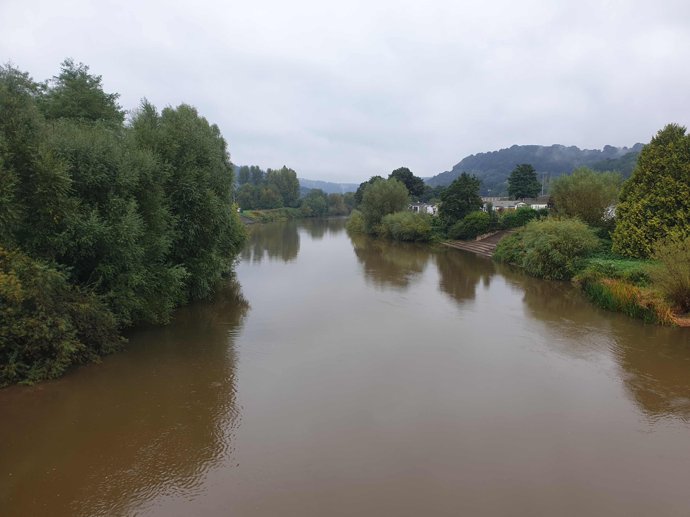
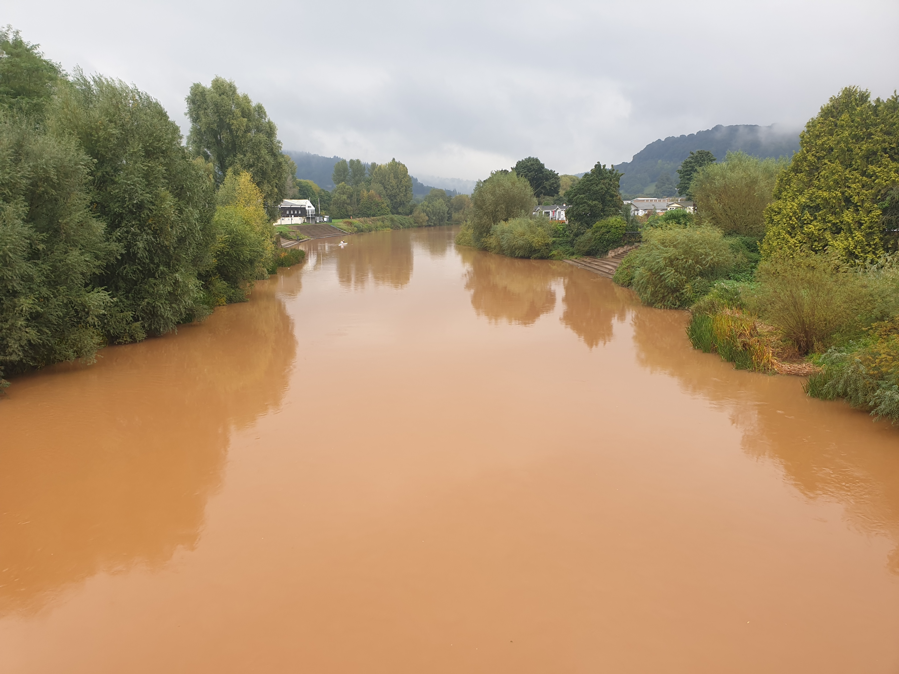
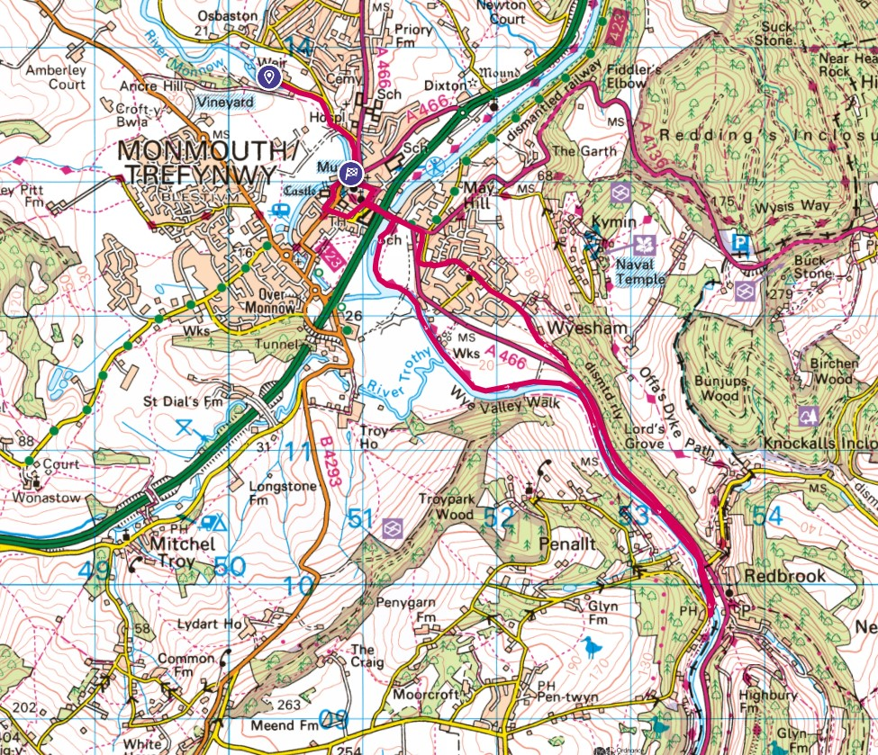

With Deb, John and Taff the dog we donned our waterproofs and headed off from the Manor to the border with England.  
The weather looked a little iffy with some pretty dark clouds and since it had been thundery weather for most of the weekend we didnt expect to finish this hike dry. But we were lucky and the only time it rained was when we were on our way back in the woods by the dismantled railway.
So we left Tiggy to look after the Manor and headed off into Monmouth.

Heading along the river bank we passed under an old metal bridge and behind that a stone bridge.


Yet another bridge on the route, but this one had Wales at one end and England at the other.

And even better, it also had The Boat Inn at one end.

After the pub we headed back along the other side of the river following the path of a dismantled railway. Under cover of trees which came in handy as it was then that the rain started.

To show how bad the weather got in the area during the hike, here are the before and after photos of the river at Monmouth.
Before the rain:
The same view 3 hours later, a slight rise in water level and quite a change in water colour:
{kind=link}
{kind=link}
This is the route. The black dashed line to the right is the Wales/England border.

This is a video...